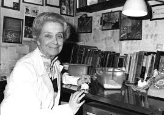
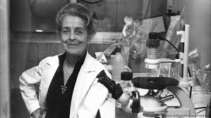

Biography

Italian neurophysiologist, Rita Levi-Montalcini was an exceptional woman, who through her pioneering contribution and hard work has set an amazing example for others to follow her footsteps. She won the 1986 Nobel Prize for physiology or medicine which she shared with biochemist Stanley Cohen, for their discovery of nerve growth factor (NGF), a protein that causes developing cells to grow by stimulating surrounding nerve tissue.
-- Early Life --
Rita Levi-Montalcini was born on April 22, 1909 in Turin to a Sephardic Jewish family. She was the youngest child of her parents, Adamo Levi, an electrical engineer and talented mathematician, and Adele Montalcini, a painter. She enrolled in the University of Turin in 1930 to study medicine, despite her father’s belief that women should not pursue careers. After completing her graduation in 1936 with a summa cum laude degree in medicine and surgery, she went to work as neurohistologist Giuseppe Levi’s assistant, where she learnt the technique of silver staining nerve cells so they would be visible under a microscope. Her academic career was cut short by Benito Mussolini’s 1938 Manifesto of Race and the introduction of laws barring Jews from intellectual and professional careers.
-- Education --
Discovering an article by American embryologist Viktor Hamburger on nerve development in chicken embryos, Levi-Montalcini then decided to construct a laboratory in her own home in Turin. She conducted research on nerve growth, using her silver staining process, in secrecy. For the next few years conducted experiments on chicken embryos, she would cook and eat the remaining yolks. She published her research on the sources of nerve constructs.
Subsequent to the Germans invasion of Italy in 1943, she moved to Florence and lived underground with her family for a time. When the war ended, she worked as a doctor in a refugee camp for a year before returning to work at the University of Turin. In 1947 she accepted a one-year residency at the invitation of Viktor Hamburger at Washington University in St Louis who had read her research papers. She remained in the USA for more than three decades, accepting a permanent research position. She initially worked together with embryologist Viktor Hamburger repeating her embryo research.

-- Career Achievements --
In 1956 she accepted the position of associate professor and in 1958 became a full professor, a position which she held until her retirement in 1977. In 1952, with biochemist Stanley Cohen, she isolated nerve-growth factor (NGF) and discovered epidermal growth factor (EGF). Levi-Montalcini and Cohen were awarded the Nobel Prize for in Physiology or Medicine in 1986 for this research. Levi-Montalcini helped establish the Institute of Cell Biology in Rome, Italy, in 1962 and in 1992 she established an educational foundation. She founded the European Brain Research Institute in 2002 and served as its first president. Indeed, the latter part of Levi-Montalcini’s life consists of a long list of scientific prizes and honors. In 1987, she received the National Medal of Science, the highest American scientific honor. In addition to her continuing research, she was a Food and Agriculture Organization (FAO) Goodwill Ambassador (1999) and an Italian Senator For life (2001).